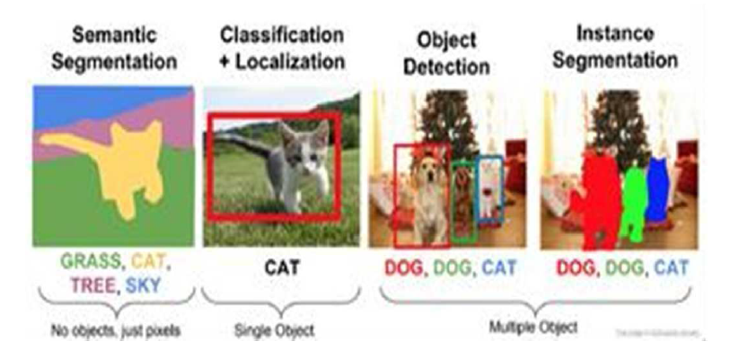

หัวข้อที่ 1: การตรวจจับวัตถุด้วย Machine Learning
การตรวจจับวัตถุ (Object Detection) เป็นหนึ่งในงานสำคัญของการเรียนรู้ของเครื่อง (Machine Learning) โดยมีวัตถุประสงค์เพื่อระบุและจำแนกวัตถุต่าง ๆ ภายในภาพหรือวิดีโอ งานวิจัยนี้มีการนำไปใช้ในหลาย ๆ ด้าน เช่น การตรวจจับใบหน้า การจราจร การตรวจสอบสินค้า ฯลฯ
การตรวจจับวัตถุสามารถแบ่งเป็นสองส่วนหลักคือ การตรวจจับ (Detection) และการจำแนก (Classification) โดยใช้เทคนิคต่าง ๆ เช่น YOLO, SSD, และ Faster R-CNN
